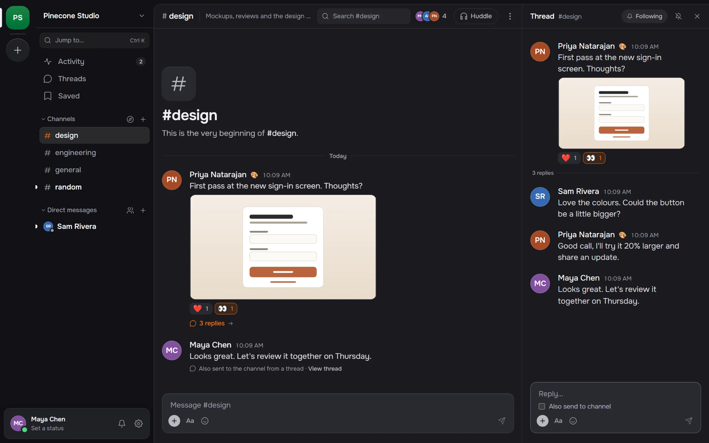
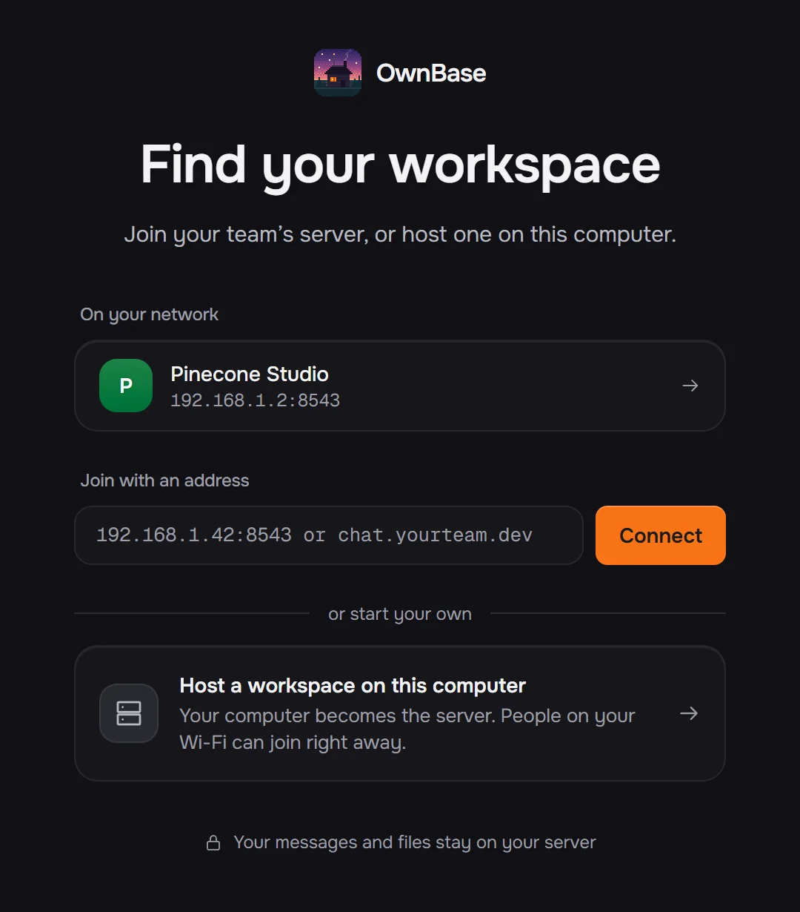
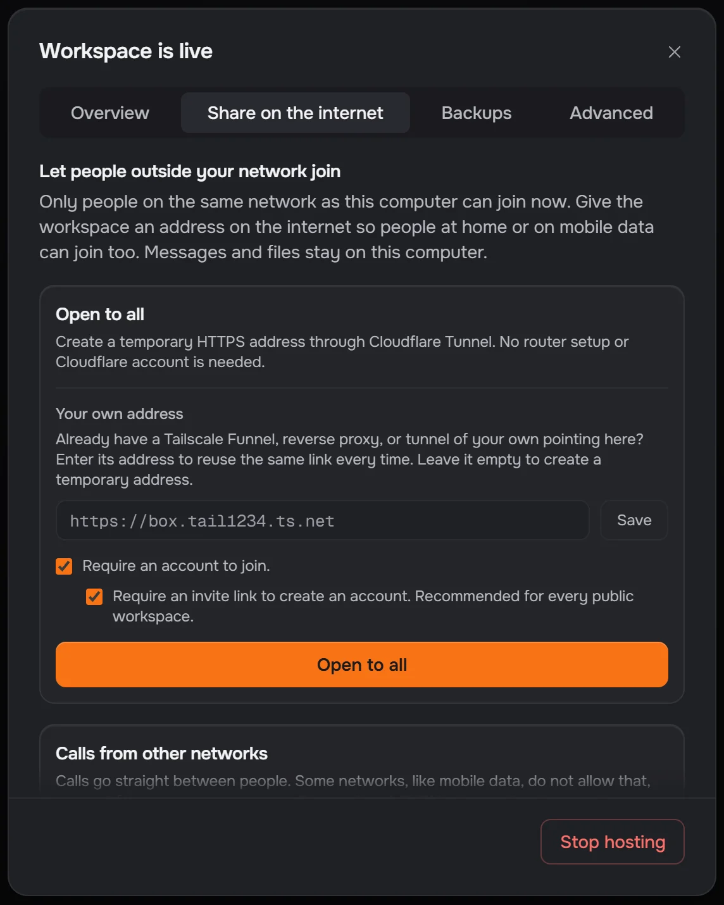
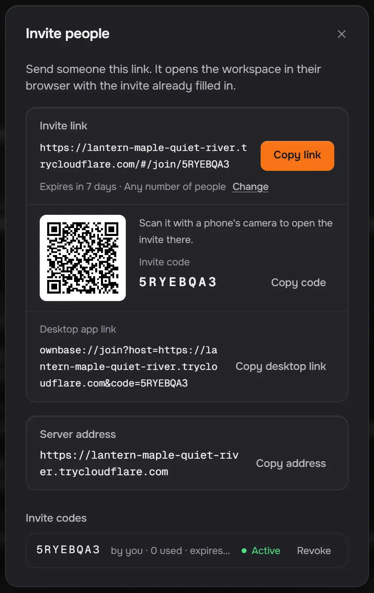
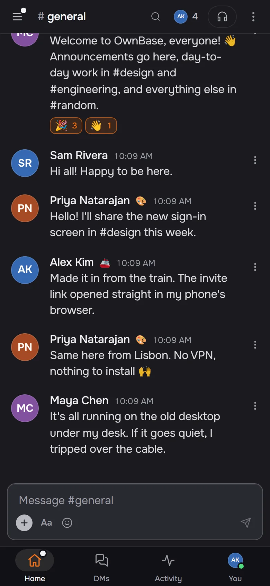
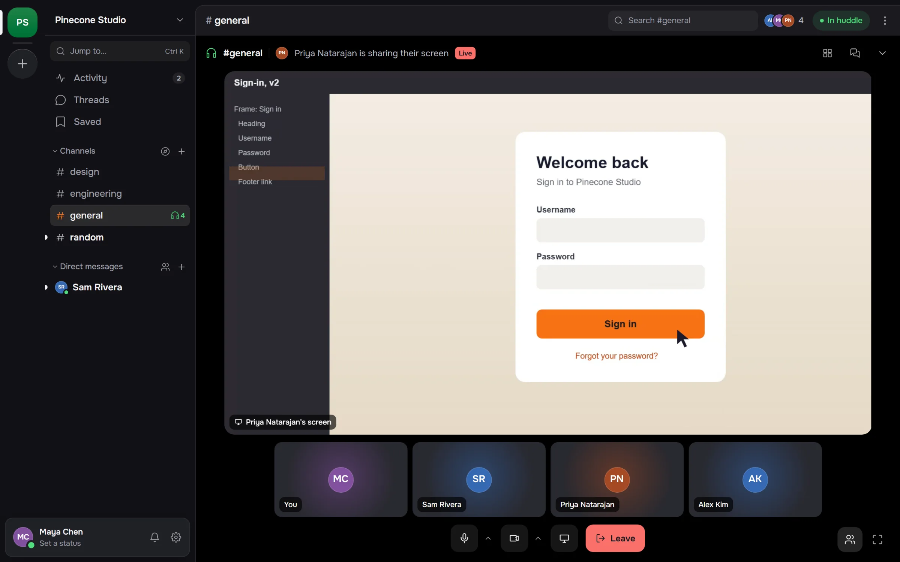
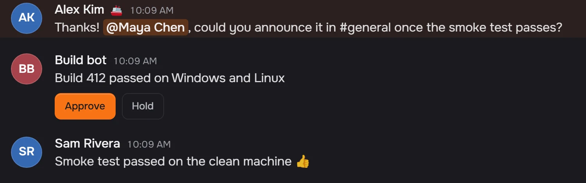

Self-hosted
Free
MIT licensed, with no member limit. Support through GitHub issues.
Get OwnBase on GitHubOwnBase is open-source team chat that you host. Run it on the computer under your desk or on a small server. Your team joins from the same Wi‑Fi, from across the world, or from a link that opens in any browser.
A pixel-art landscape at dusk. A cabin's orange window is your server. Dotted arcs reach out from it to a house across town, a boat on the lake, a passing train and a city on the horizon, and each one lights up gold as it connects.
Channels, threads, search, calls and bots, in the desktop app or any browser. A narrow window gets a phone layout.

Private channels, group DMs, pins, and drafts that survive a restart.
from:@sam in:#design narrows it down. File names match too.
Scheduled messages go out from the server, even with your laptop shut.
The server hands the whole app to any browser, phones included.
Hosting is a button in the desktop app. It runs the same server you'd put on a VPS, so you can move there later without changing anything.
Press Start hosting. Anyone on the same Wi-Fi sees the workspace on their Join screen.
Reachable at
192.168.1.42:8543

Open to all starts a Cloudflare Quick Tunnel: an HTTPS address, with no router settings and no account. Or bring your own address.
Reachable at
https://lantern-maple-quiet-river

It opens in any browser, and phones can scan its QR code. New accounts need an invite by default.
Joined from
…trycloudflare.com


OwnBase is in beta, so expect rough edges and keep a backup of the data folder.
The desktop app. Host a workspace, or join one nearby or from an invite link.
One app for Apple silicon and Intel. Apple hasn't signed it yet, so the first time, choose Open Anyway in System Settings, Privacy & Security.
One JavaScript file for a VPS or home server, or use the Docker setup.
node ownbase-server.js --data ./dataNothing to install. Open your team's invite link in the browser and sign in.
Huddles with audio, camera and screen share, in any channel or DM. The server only introduces people. Audio and video go directly between them, or through a TURN relay you run.

Made for small groups: twelve people with two cameras on cost each of them about a third of a CPU core.
Bot tokens, incoming webhooks, slash commands, events, buttons and modals, in Slack's shapes and signed the way Slack signs them. Most integrations only need a new URL.
$ curl https://chat.yourteam.dev/hooks/<token> \
-H 'content-type: application/json' \
-d '{"text":"Build 412 passed on Windows and Linux"}'
The integration contract lists every method and each place OwnBase differs from Slack.
Every message, file and account lives in a data folder on the host. Copy it, back it up or move it. There's no account with us, and no cloud in between unless you add one.
data/
--backup-dir backs up every 24 hours, checks each copy and keeps the
newest seven.
The owner downloads the workspace as one .zip, and
restore --from puts it back.
The self-hosted edition is the whole product, for anyone, companies included. Hosted plans are coming for teams who would rather not run a server.
Free
MIT licensed, with no member limit. Support through GitHub issues.
Get OwnBase on GitHub$20 a month per workspace
We run it: backups, updates and a stable HTTPS address, for up to 50 members. Take the folder to your own server any time.
Not on sale yet
Annual contract
Single sign-on, SCIM, an audit log and an SLA, on your servers or a dedicated one we run.
Not on sale yet